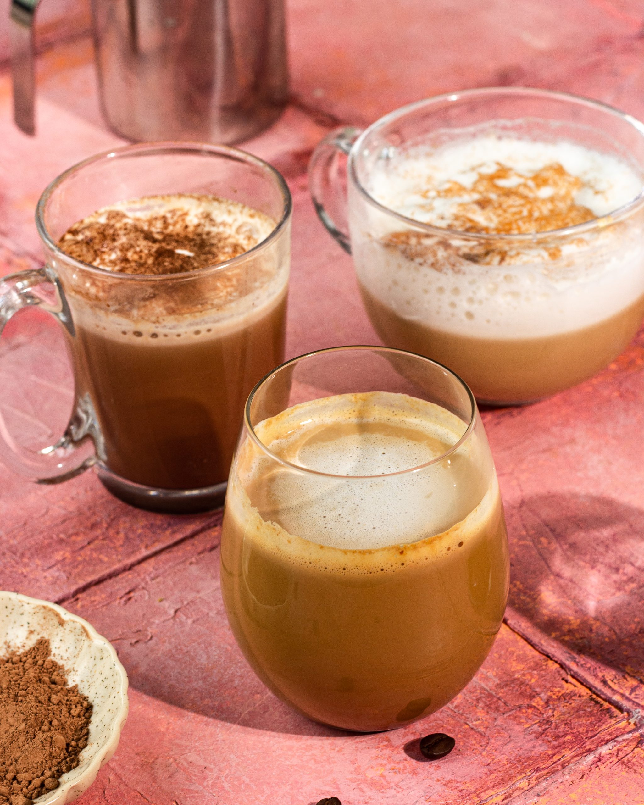
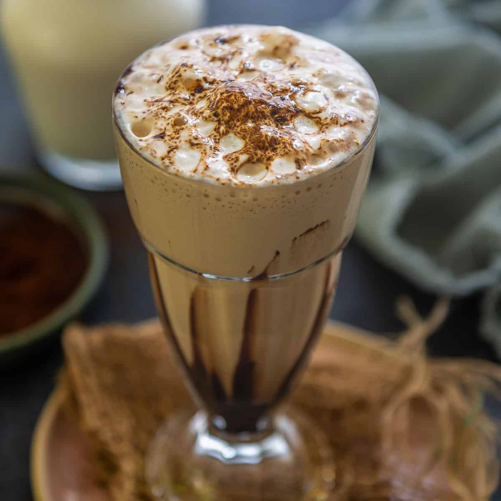

Coffee Recipes is

- Cold Coffee
- Brew strong coffee, using your preferred method (such as a French press or espresso machine).
- Allow the coffee to cool completely to room temperature.
- Fill a glass with ice cubes.
- Pour the cooled coffee over the ice.
- Add sweetener and cream to taste, if desired.
- Stir to combine.
- Enjoy your cold coffee!

- Hot Coffee
- Gather ingredients: coffee, milk, sugar, ice cubes, a blender.
- Brew strong coffee and let it cool.
- In a blender, combine the milk, sugar.
- Blend until smooth and frothy.
- Pour into a glass and enjoy your hot coffee.
Optional: top with whipped cream and chocolate syrup for an extra treat.